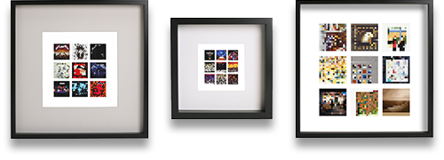

Love music, love pixels
Your favourite album covers revisited. Love your old album covers again but this time with a twist.
What are musicons?
Musicons are an ongoing experimental project by designer/educator Paul McCormack. Musicons is an exploration into the use of limited materials and minimal artistic expression. Working within a strict set of criteria, popular album art has been revisited and given a contemporary twist.
These were never intended to become anything other than an experiment into minimalism, breaking down popular images until they are barely recognisable. However they received some interest on my Instagram and Twitter feeds and I developed the idea further.
Can I get my own musicon?
I’m currently working on my own online shop but in the meantime you can buy musicons from Etsy, and TicTail.
The range on offer is limited at the moment so if you wish to order a bespoke print let me know what album covers and the size of print you would like: hello@musicons.co
Sorry the Judas Priest Musicon wallpaper has gone!